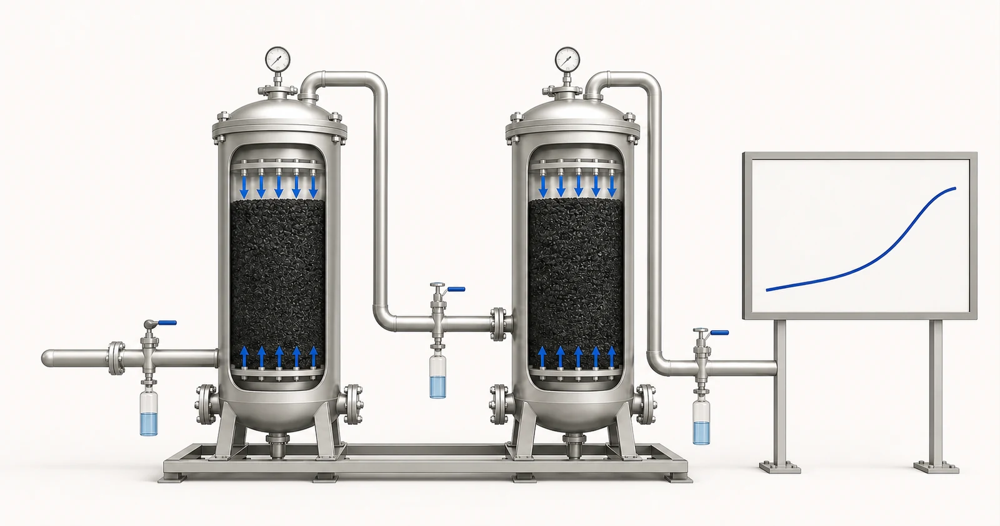

직접적인 답변
산업용 GAC 시스템은 미디어 질량만을 중심으로 하는 것이 아니라 치료 목표와 획기적인 제어 전략을 중심으로 설계되었습니다. 빈 베드 접촉 시간 또는 EBCT은 공칭 빈 베드 볼륨을 흐름과 관련시키지만 이는 단지 하나의 설계 입력일 뿐입니다. 층 깊이, 로딩 속도, 수질 화학, 경쟁 유기물, 온도, 입자 제어, 흐름 분포 및 선택한 탄소가 모두 작동에 영향을 미칩니다. 또한 설계에는 압력 제한, 샘플링 지점, 정의된 출구 트리거, 역세 또는 미세 관리 규정, 교체 또는 재생 계획이 필요합니다. Yuchen Water은 보고서, 유압 의무 및 모니터링 요구 사항을 검토한 후 활성탄 재료를 공급하고 장비 기술 지원을 제공할 수 있습니다.
구매자의 문제부터 시작하세요
구매자는 필요한 흐름을 알지만 오염물질 부하나 목표 종점은 알 수 없습니다. 이 경우 선박 크기 조정으로는 미디어 수명을 설정할 수 없습니다. 또 다른 프로젝트에는 상세한 화학적 성질이 있지만 최고 유량, 듀티 사이클 또는 사용 가능한 압력에 대한 정보가 없을 수도 있습니다. 두 가지 격차가 모두 중요합니다. 기술 개요는 수질, 수력학 및 운영을 결합하여 시스템이 최대 수요 또는 계절 변화 동안 사라지는 평균 조건에 맞게 규모를 조정하지 않도록 해야 합니다.
돌파구는 완전한 피로와 동의어가 아닙니다. 이는 모니터링되는 화합물 또는 대리자가 프로젝트 정의 트리거에 도달하는 지점입니다. 운영 마진을 제공하기 위해 규정 준수 또는 프로세스 제한 이전에 해당 트리거를 설정할 수 있습니다. 서로 다른 화합물은 서로 다른 시간에 파괴될 수 있으며 천연 유기물은 흡착 용량을 차지할 수 있습니다. 프로젝트에는 무엇을 측정할지, 어디에서 샘플을 채취할지, 얼마나 자주 분석할지, 결과에 따른 조치가 무엇인지 명시해야 합니다.
어떤 보고서와 운영 데이터가 필요한가요?
산업 검토에는 대표적인 화학 프로필과 유압 작동 범위가 필요합니다. 단일 TDS 결과로는 흡착 의무 또는 용기 동작을 정의할 수 없습니다.
- 표적 화합물, 입구 범위, 출구 표적 및 분석 방법
- TOC 또는 COD, 천연 유기물 지표 및 경쟁 화합물
- pH, 온도, 탁도, 부유 물질 및 생물학적 맥락
- 일일 런타임 및 유량 변화가 있는 평균, 최소 및 최대 유량
- 사용 가능한 압력, 허용 가능한 압력 손실 및 다운스트림 요구 사항
- 계획된 혈관 직경, 층 깊이, 층 부피 및 분배기 개념(알고 있는 경우)
- 샘플링 위치, 빈도, 획기적인 트리거 및 응답 시간
- 배지 교체, 재생, 역세, 배수 및 사용한 배지 계획
보고서는 제안된 출처를 나타낼 수 있을 만큼 최신이어야 하며 샘플 날짜와 위치를 식별해야 합니다. 계절, 생산 배치, 운영 상태에 따라 물이 변하는 경우 하나의 편리한 결과보다는 범위를 제공합니다. 현재 분석과 별도로 필요한 처리수 목표를 명시합니다. 값을 알 수 없으면 알 수 없음으로 표시합니다. 추측한 숫자보다 눈에 보이는 간격이 더 안전합니다.
수력학적 정보는 화학 옆에 속합니다. 평균 흐름만으로도 짧은 피크 조건, 간헐적인 사용 및 긴 정체를 숨길 수 있습니다. 일일 런타임, 최대 수요, 사용 가능한 압력, 허용 가능한 압력 손실, 장비 크기를 확인하면 WHO이 탄소를 모니터링하고 교체합니다. 이러한 세부 사항은 서비스 가능한 시스템에서 그럴듯한 미디어를 사용할 수 있는지 여부를 결정합니다.
선택 논리
제안된 빈 베드 볼륨 및 작동 흐름에서 공칭 EBCT을 계산한 다음 전체 유압 범위가 의도한 설계 기준을 유지하는지 테스트합니다. 모든 오염 물질에 대한 보편적 요구 사항으로 EBCT을 게시하지 마십시오. 가치는 관련 증거, 파일럿 작업, 공급업체 지침 또는 적격 프로세스 설계를 통해 뒷받침되어야 합니다. 최대 흐름, 병렬 작동 및 서비스 중단 선박은 사용 가능한 접촉을 실질적으로 변경할 수 있습니다.
다음으로 흐름 분포를 검토하세요. 열악한 분배기, 균일하지 않은 로딩, 갇힌 공기 또는 침대 교란으로 인해 효과적인 접촉이 단축되는 우선 경로가 생성될 수 있습니다. 베드 깊이와 용기 형상은 선택한 입자 크기, 보유 스크린 및 역세 전략과 함께 작동해야 합니다. 용기 전체의 압력 게이지 또는 트랜스미터는 작동 신호를 제공하지만 압력 손실만으로는 흡착 돌파가 나타나지 않습니다.
모니터링과 혈관 순서를 함께 선택하십시오. 납 지연 용기는 연마 장벽을 제공하고 납 베드가 트리거에 도달한 후 작동 위치가 회전되도록 할 수 있습니다. 병렬 용기는 흐름 용량을 제공할 수 있지만 균형 잡힌 분포와 각 열차에 대한 샘플링 전략이 필요합니다. 배열에는 연속성 요구 사항, 분석 전환, 미디어 서비스 액세스 및 아웃렛 목표 초과 결과가 반영되어야 합니다.

- 리드 접촉기
- 단계 간 샘플 지점
- 지연 접촉기
- 출구 샘플 포인트
- 개념적 혁신 추세
개념적 그림입니다. 테스트 결과, 제품 인증 또는 엔지니어링 도면이 아닙니다.
전처리, 장비 및 운영 상황
전처리는 유압 및 흡착 성능을 보호합니다. 고형물 제어는 오염 및 채널 형성을 줄일 수 있는 반면, 업스트림 화학은 목표 공정에 대한 조정이 필요할 수 있습니다. 산화제나 생물학적 성장이 관련된 경우 설계에서는 이를 명시적으로 다루어야 합니다. 역세 수질, 흐름 및 처리 또한 검토가 필요합니다. 현장에서 필요한 수리학적 조건을 제공할 수 없는 경우 역세 조항은 가치가 없습니다.
시운전 시에는 매체 식별, 적재된 양, 층 깊이, 초기 세척, 기본 압력 및 초기 분석 결과를 문서화해야 합니다. 운영에서는 흐름, 압력, 샘플링 결과 및 서비스 이벤트의 추세를 파악해야 합니다. 교체 계획에는 미디어 가용성, 용기 격리, 안전한 취급 및 서비스 복귀 후 검증이 포함되어야 합니다. Yuchen Water은 정의된 범위 내에서 자재 문서, 공급 및 장비 관련 질문을 지원할 수 있습니다.
일반적인 실수
- EBCT을 유일한 크기 조정 규칙으로 처리
- 오염물질 로딩 없이 탄소 킬로그램으로 미디어 수명 예측
- 파과 테스트 대신 압력 강하 사용
- 설계에서 최대 유량, 용기 가동 중단 및 분석 턴어라운드 생략
- 콘센트 제한 이전에는 샘플링 지점이나 조치 수준을 제공하지 않습니다.
증거 및 서비스 경계
예비 선박 개념은 정보 격차와 가능한 배열을 식별할 수 있지만 성능이 보장되는 설계는 아닙니다. 용량 예측에는 구매자가 볼 수 있는 애플리케이션 관련 증거와 가정이 필요합니다. 불확실성이 중요한 경우, 최종 상업적 약속 이전에 벤치 또는 파일럿 테스트와 보수적인 모니터링 계획이 적절할 수 있습니다.
Yuchen Water의 역할은 활성탄 재료 공급과 관련 용기, 여과 및 장비 기술 지원입니다. 현장 엔지니어링, 현지 규정 준수, 프로세스 안전 및 최종 운영 승인은 프로젝트마다 다릅니다. 게시된 페이지는 승인되고 문서화된 근거 없이 보편적인 EBCT, 침대 수명, 제거 비율 또는 교체 간격을 약속해서는 안 됩니다.
Yuchen Water은 먼저 목표와 증거를 검토한 다음 적절한 탄소 형식과 재료 질문을 식별하고 전처리 및 장비 요구 사항과 여전히 필요한 문서 또는 테스트를 지원합니다. 출력은 예비 지침, 누락된 정보 요청 또는 지원 가능한 재료 및 장비 권장 사항일 수 있습니다. 단순히 구매자가 제품 이름을 제공했다는 이유만으로 추천이 공개되는 것은 아닙니다.
공급 후 기술 지원에는 문서 확인, 설치 및 세척 질문, 원격 시운전 안내, 모니터링 지점 및 합의된 범위 내 교체 계획이 포함될 수 있습니다. 실제 성능은 여전히 승인된 자재, 전체 장비, 원수, 설치, 운영 및 유지 관리에 따라 달라집니다. 게시된 지침은 프로젝트 검토를 대체할 수 없습니다.
보고서, 건설, 증거 및 운영 조건을 검토하기 전에는 최종 자재, 용량, 서비스 수명, 제거 비율 또는 프로젝트 결과가 약속되지 않습니다.
공식 기술 소스
이러한 소스는 처리 원칙이나 인증 경계를 설명합니다. Yuchen Water 제품을 인증하지 않으며 프로젝트 관련 증거를 대체하지 않습니다.
관련 활성탄 지침
지식 클러스터를 계속 진행하고, 명시된 한도 내에서만 선택한 샘플 증거를 검토하고, 제품 형식을 비교하거나, 기술 검토를 위해 보고서를 제출하세요.